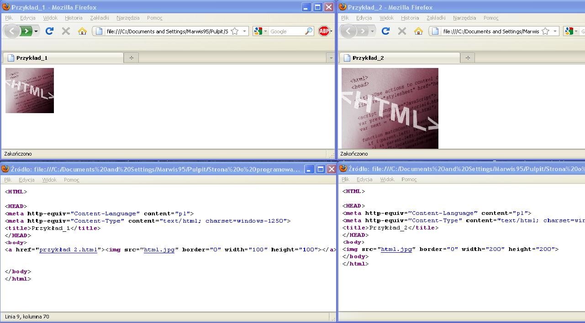

Tworzenie galeri to w³aœciwie wstawianie linków króre s¹ miniatur¹
i przenosz¹ nas na stronê gdzie znajduje sie orgina³.
O tworzeniu linków w nastêpnym dziale.
Na stronie g³ównej wsawiasz link:
(a href="przyk³ad_2.html")(img src="html.jpg" border="0" width="100" height="100")(/a)
A na podstronie obrazek w wiêkszych wymiarach:
(img src="html.jpg" border="0" width="200" height="200")
Gotowe! Teraz po naciœniêciu na miniaturê otworzy siê strona z du¿ym obrazkiem.